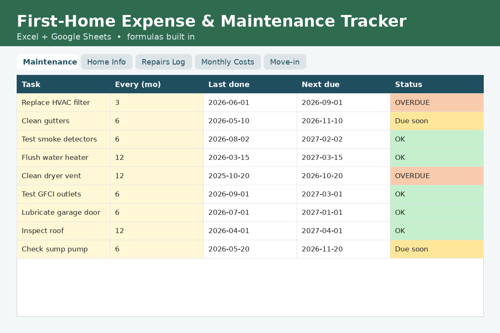

Home Maintenance Budget Calculator
Free, private, no sign-up. Runs entirely in your browser.
Want the full system?
30 pre-loaded maintenance tasks with automatic due dates, a repairs log and your true monthly cost of owning a home.

How this calculator works
How much should I budget for home maintenance?
A common rule of thumb is 1–4% of the home’s value per year, higher for older homes. The free calculator shows the range for your home.
What maintenance does a new house need?
HVAC filters, smoke detectors, gutters, water heater flushes and more. The kit includes 30 common tasks with suggested frequencies.
Estimates only; not financial advice.